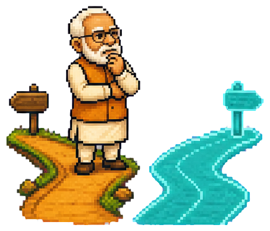
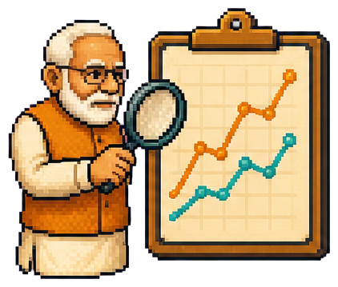
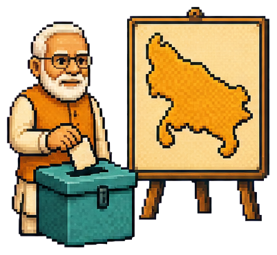
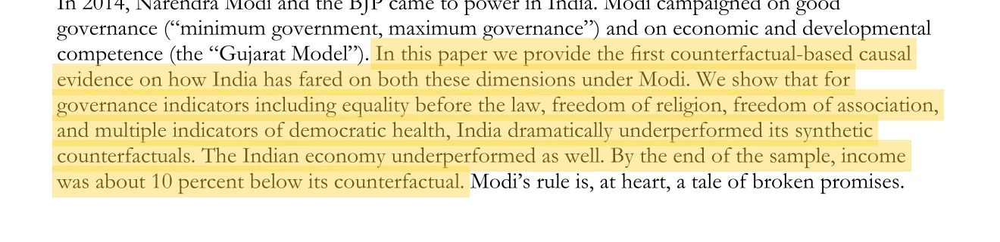
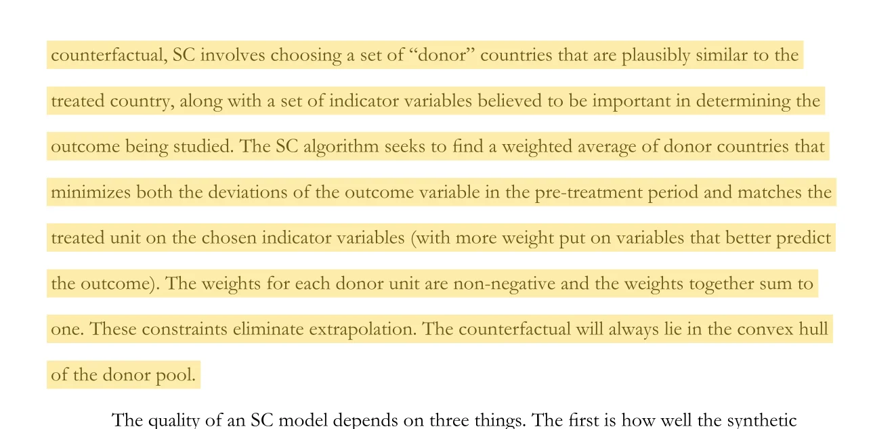
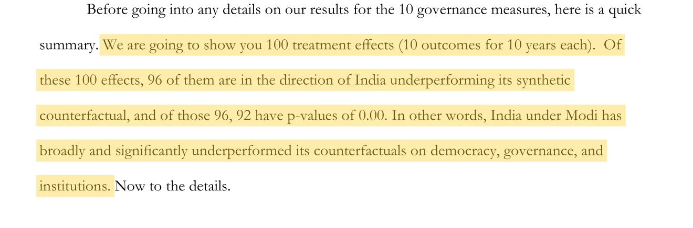
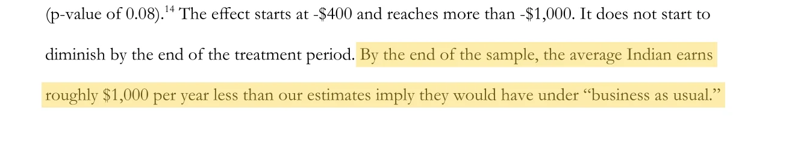
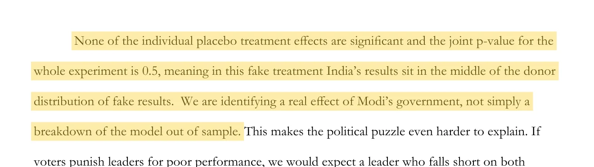

Make India grow faster
The “Gujarat Model” was presented as proof that a Modi government could accelerate development—not simply keep India growing at its old pace.
Has Modi kept his promise? The paper looks at two things: did India’s economy grow as much as it could have, and did government work better?
! A note before we begin: The authors call their made-up comparison “synthetic India.” This guide calls it “Bhagwan Bharose India.” The study has not yet been peer reviewed.
The paper turns Modi’s broad pitch into two things it can test.
The “Gujarat Model” was presented as proof that a Modi government could accelerate development—not simply keep India growing at its old pace.
“Minimum government, maximum governance” promised cleaner, more capable government and stronger public institutions.
A simple example / two schools
Imagine you are appointed principal of a school. Its average score is 60 when you arrive. Two terms later, it is 70.
The authors combine small and large shares of several broadly comparable countries until the mix behaves like India did before 2014. The paper calls the result synthetic India. Here, we call it Bhagwan Bharose India.
The basic rules / set before seeing the answer
The authors start with 14 large developing or emerging economies whose income is similar to, or below, India’s. That starting list is a judgment call.
The algorithm adjusts every country’s share until their combined income path and economic basics resemble pre-2014 India. The shares must total 100%.
A comparison country should not have its own 2014 turning point—such as regime change, war, famine or economic shock. The authors say none of the final five did.
Bangladesh, Brazil, China, Egypt, Ethiopia, Indonesia, Malaysia, Mexico, Pakistan, the Philippines, South Africa, Thailand, Turkey and Vietnam.
What the algorithm settled on
None of the five has to look like India on its own. Only the combined mix does.
Ethiopia 38 · China 28 · Bangladesh 25 · Pakistan 7 · Philippines 2
Check 1 / income before Modi
The paper shows six checkpoints between 1984 and 2013. At four of them, real India and Bhagwan Bharose India are less than 1% apart. The two largest gaps are about 5% and 3%.
Source: Table 3 and Figure 6A, PDF pages 21–22
“Gap” simply shows how far the two numbers are apart, as a share of real India’s income at that checkpoint.
Custom redraw from Penn World Table 11.0 using the paper’s published country shares. The paper’s own calculation uses more precise shares than the rounded numbers it prints.
These four pre-2014 comparisons come from Table 3. They are close, but four indicators can never prove that the two Indias are alike in every possible way.
Starting point / all five countries
The main calculation uses all five countries, with Ethiopia contributing the largest share.
The paper’s one published removal test
The match gets worse, but the estimated post-2014 shortfall becomes larger rather than changing direction.
Full replacement mix + chart not publishedThis is the only one-country-out test the paper reports. It tells us the conclusion survives removing Ethiopia; it cannot tell us what would happen after removing every other country in turn.
Choose the result you expect. The question is how real India compares with its made-up twin—not how India in 2023 compares with India in 2013.

Your prediction
By 2023, the authors estimate that real income per person was roughly $1,000 a year lower than in Bhagwan Bharose India.
When the authors test the other countries in the same way, only one ends with a larger gap.
Across the 100 year-by-year comparisons, 96 put real India below Bhagwan Bharose India. In 92, none of the same tests on the other countries produces a gap as large.
Across all ten measures, India’s overall gap is larger than every gap produced by testing the other countries in the same way.
Elections
This measure covers fair elections, voting rights, elected leaders and the freedom to compete for power.
The final gap is shown relative to India’s own 2013 score.
Before 2014, the line stays near zero. After 2014, real India falls behind its made-up twin.
Data source: V-Dem, a global project that tracks democracy and governance. Custom redraw using the country shares in Table 1; final gap from Table 2; paper reference: Figure A1.
We have already seen the first check: the two income paths match before 2014. The paper then tests whether other countries produce equally large gaps and whether a deliberately wrong start date invents one.

Recap / before 2014
You saw this when the made-up India was built: across the 30 years before Modi took office, the two income paths stay close.
Source: Figure 6A and Table 3, PDF pages 21–22
Custom redraw from the paper’s reported income data and published country shares.
The study has not yet passed journal peer review. Methods, text and conclusions may change.
The authors explain their starting list, but deciding which countries count as fair comparisons remains a judgment call.
The ten governance measures come from V-Dem and depend partly on expert assessments. The paper cannot rule out a bias specific to how India was rated.
The calculation covers India under the Modi government as a whole. It cannot tell us which policy or event produced each gap.
What “p-value” means in this paper: the authors run the method on each of the other countries and count how many end with a gap at least as large as India’s. A smaller number means India’s result is harder to reproduce by chance. Here, 0.00 means none of those tests produced a larger gap. It does not mean there is zero chance the paper is wrong. A value of 0.50 puts India around the middle of the group.
This comparison cannot answer that question. The authors instead point to a durable Hindu-nationalist base and a divided opposition in India’s first-past-the-post electoral system.

Authors’ interpretation · not a causal result from the modelSwitch election
Uttar Pradesh / the clearest example in the paper
In 2014, SP and Congress often competed against each other as well as the BJP.
Paper’s reading: a strong base plus opposition vote-splitting converted pluralities into a huge seat advantage.
The whole argument in three steps
India improved after 2014, but improvement alone is not the question. The question is whether India did as well as it reasonably could have.
The authors build Bhagwan Bharose India from a mix of other countries that resembles real India before 2014.
The paper’s answer is that real India falls short on both income and governance. That is still an estimate from a working paper—not an observed alternate history.
Open the highlighted passages to compare this guide with the authors’ original wording and surrounding context.

Grier and Grier, 2026, abstract.

Grier and Grier, 2026, Section 4A.

Grier and Grier, 2026, Section 5A.

Grier and Grier, 2026, Section 5B.

Grier and Grier, 2026, Figure 8 discussion.